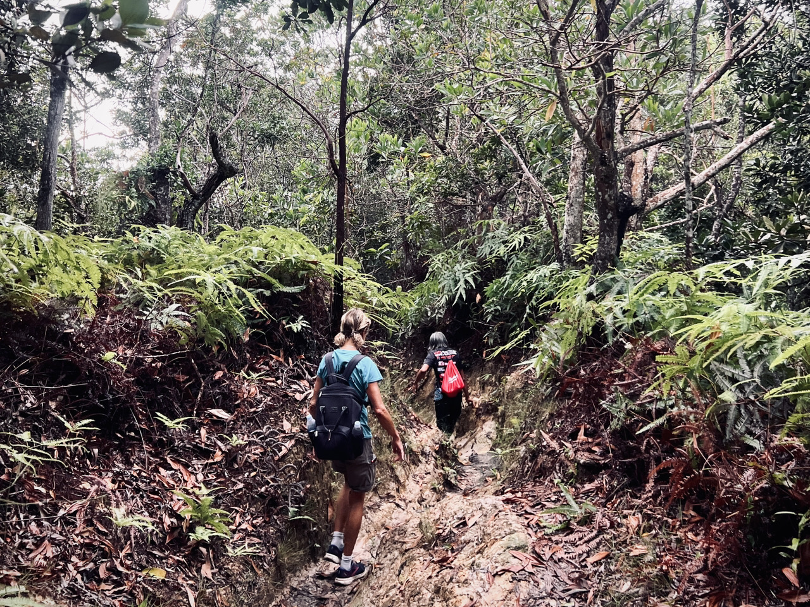
Forest Hiking
Lush tropical rainforests, rolling hills, and waterfall trails.
📍 Bukit Patoi Forest Reserve, Bukit Sipatir, Bukit Shahbandar
ACTIVITIES
Whether you want to explore the rainforest, learn about local heritage, try a traditional craft or enjoy a round of sport, here are some ideas to help you build your trip.

Lush tropical rainforests, rolling hills, and waterfall trails.
📍 Bukit Patoi Forest Reserve, Bukit Sipatir, Bukit Shahbandar
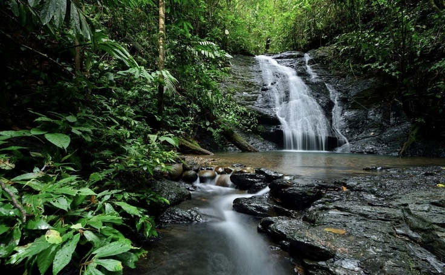
Take a short walk to a cool waterfall and enjoy a picnic by the water.
📍 Tasek Lama Recreational Park, Teraja Waterfall, Wasai Janggut
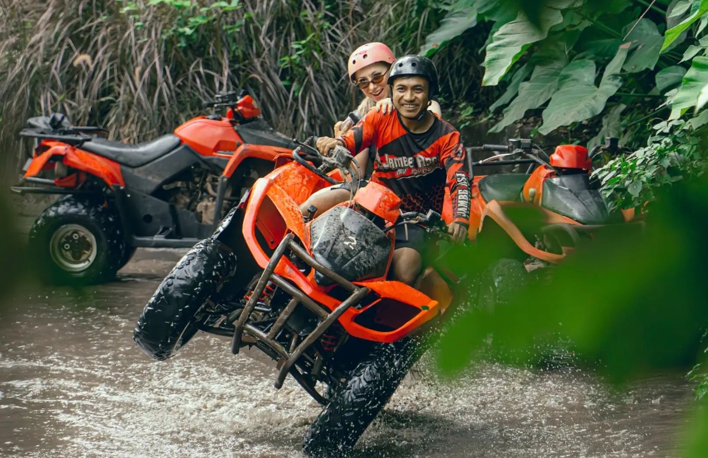
Ride a quad bike along muddy jungle tracks with a guide.
📍 Katimahar Agri Park, Gunung Mutiara, Peliunan Park
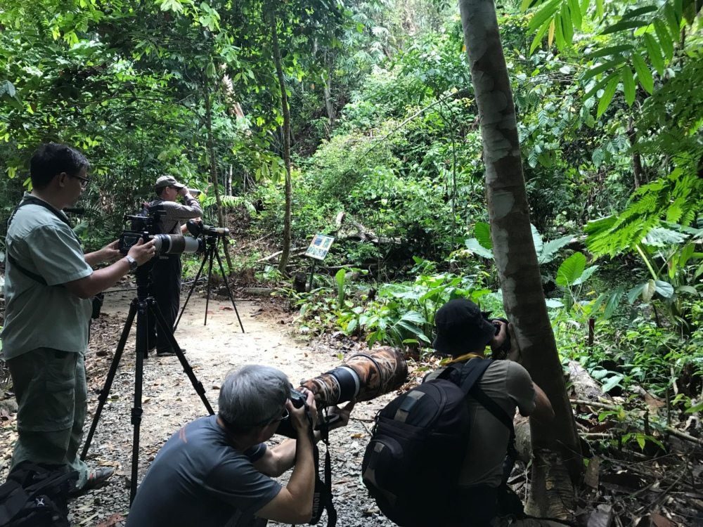
Spot herons, kingfishers and other wetland birds, best in the early morning.
📍 Bukit Sarang Helang, Andulau Forest Reserve, Tasek Merimbun Heritage Park
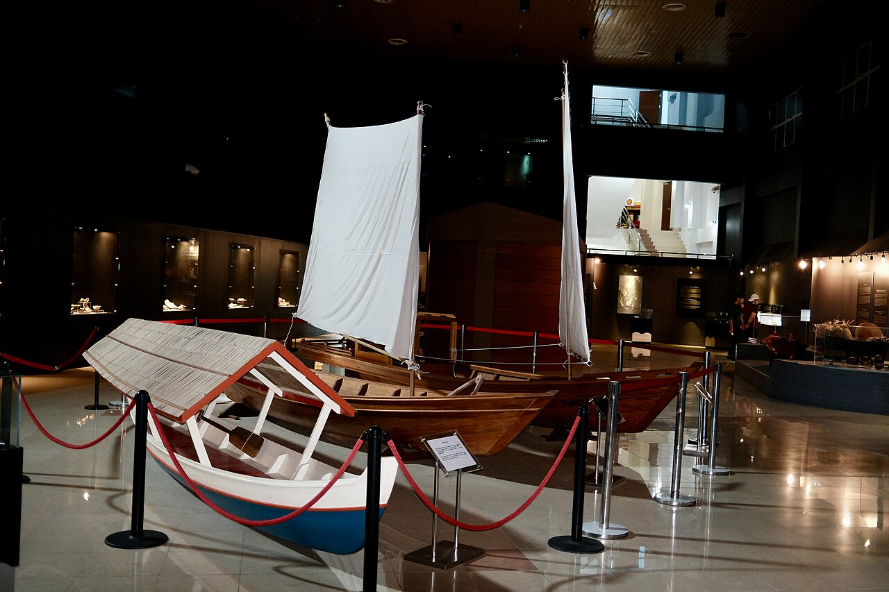
Focuses on displays ceramics, treasures and artifacts recovered from 15th century shipwrecks along the Maritime Silk Road
📍Kota Batu, Brunei-Muara
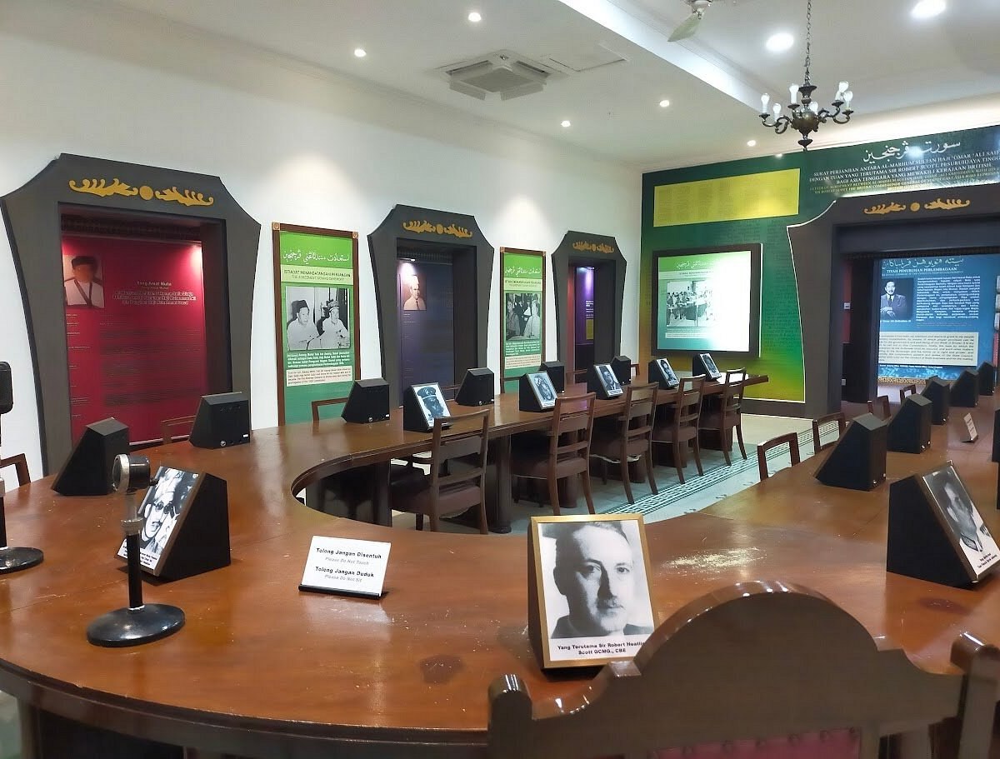
Focuses on military history, weaponry, uniforms and memorabilia located inside Bolkiah Garrison
📍 Bolkiah Garrison, Brunei Muara
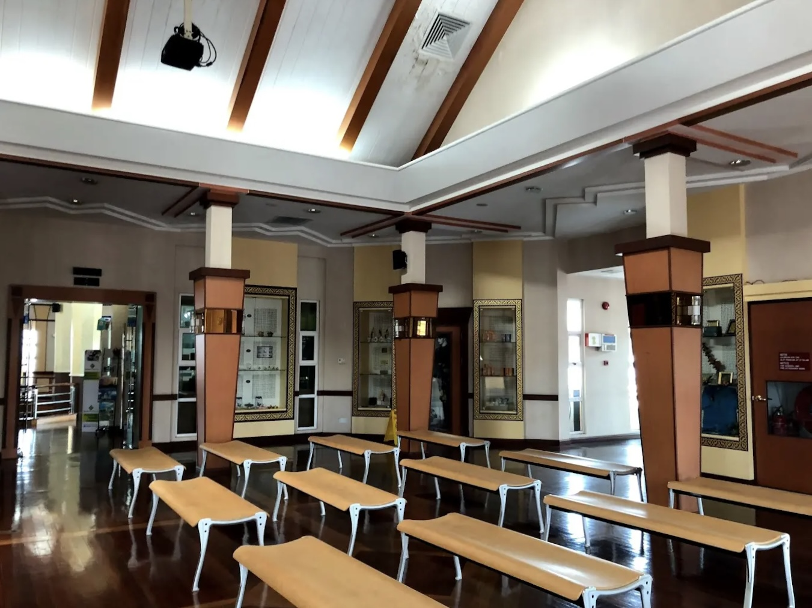
Focuses on showcasing the history, traditional handicrafts and daily life of Brunei's historic water village
📍 Kampong Ayer, Brunei Muara
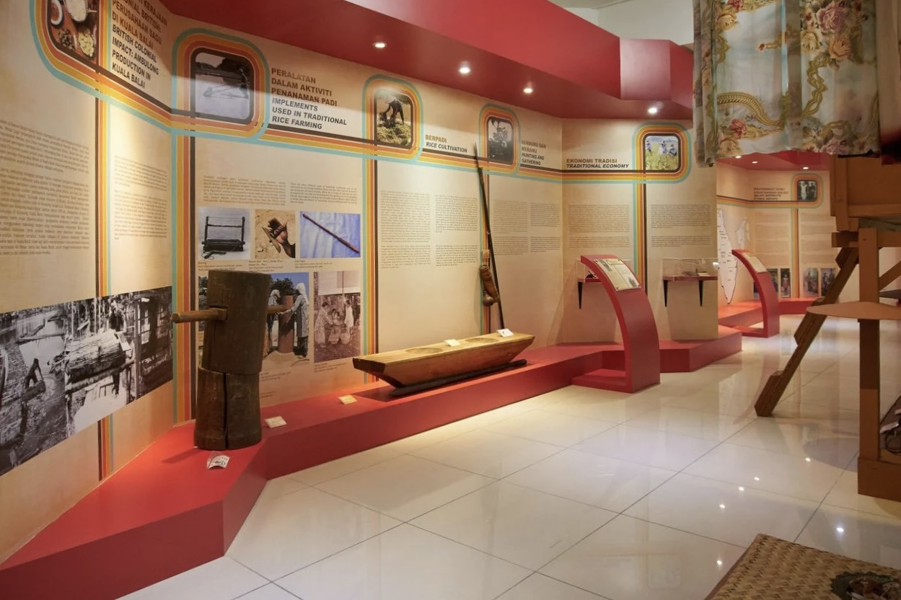
Focuses on five galleries on local district history, indigenoous cultures and wildlife
📍 Kampong Ayer, Brunei Muara
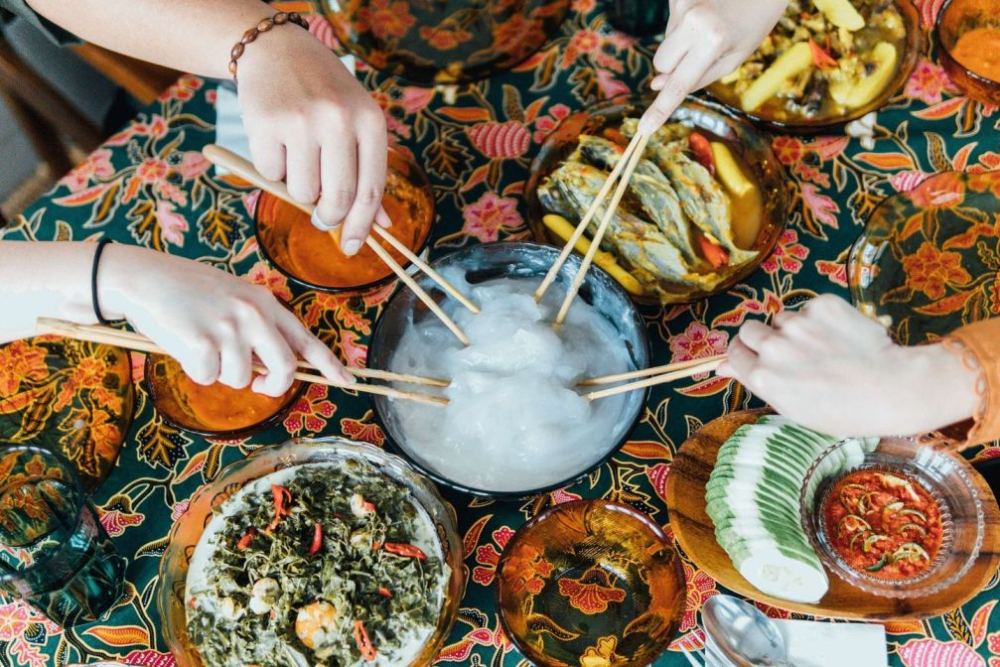
Learn to prepare the national dish and eat it the tradional way with a bamboo fork
📍 Kampong Ayer, Bandar Seri Begawan
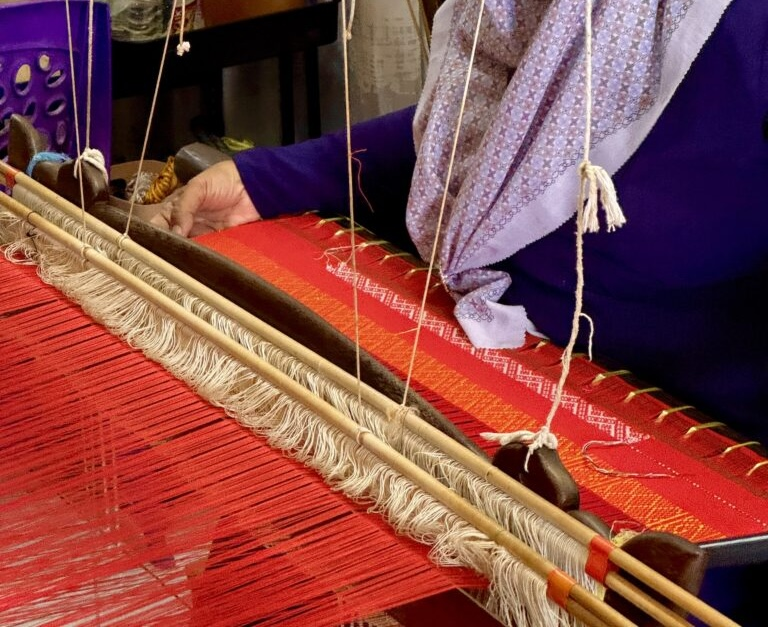
Preserves traditional Bruneian crafts like textiles, brocades and silverware
📍 Kampong Ayer, Bandar Seri Begawan
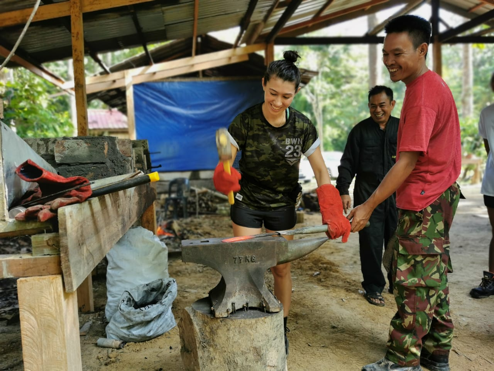
Traditional village forge covering blacksmithing and woodworking to craft your own Borneo parang.
📍 Tanjong Bukit Mambangan Park, Tutong
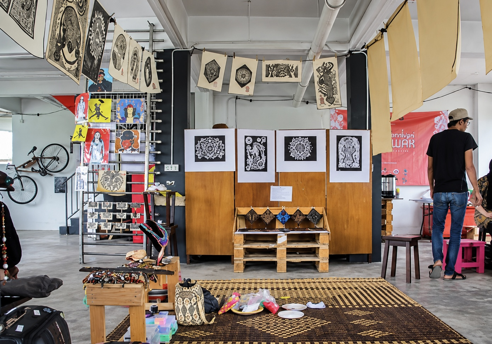
Local fine arts and craft studio offering art workshops and exhibitions
📍 Sengkurong Shopping Complex, Bandar Seri Begawan
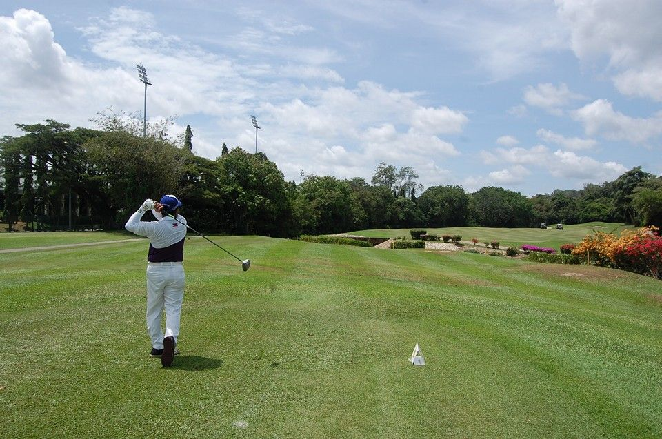
Play a round on a scenic course with views of the South China Sea.
📍 Empire Hotel Country Club, Jerudong
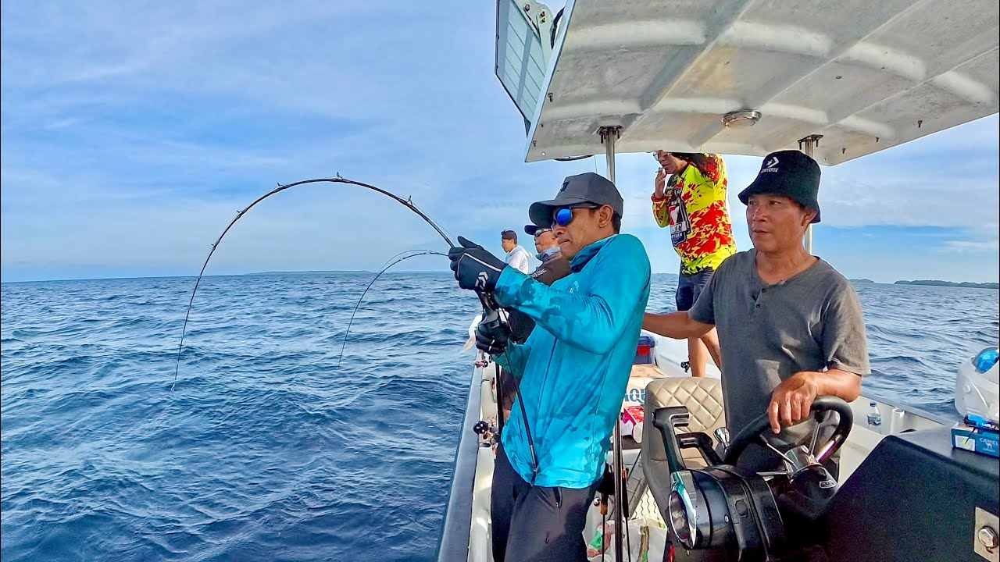
Join a boat trip for a day of fishing on the open water.
📍 Muara coast, Jerudong
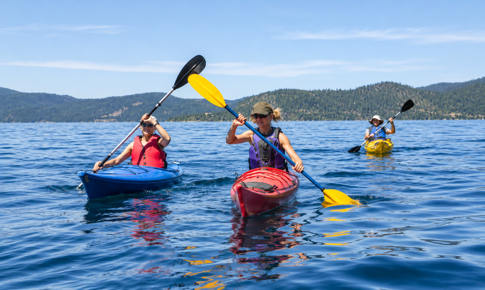
Paddle through the calm sea or through the lushful forest.
📍 Serasa beach, Serasa
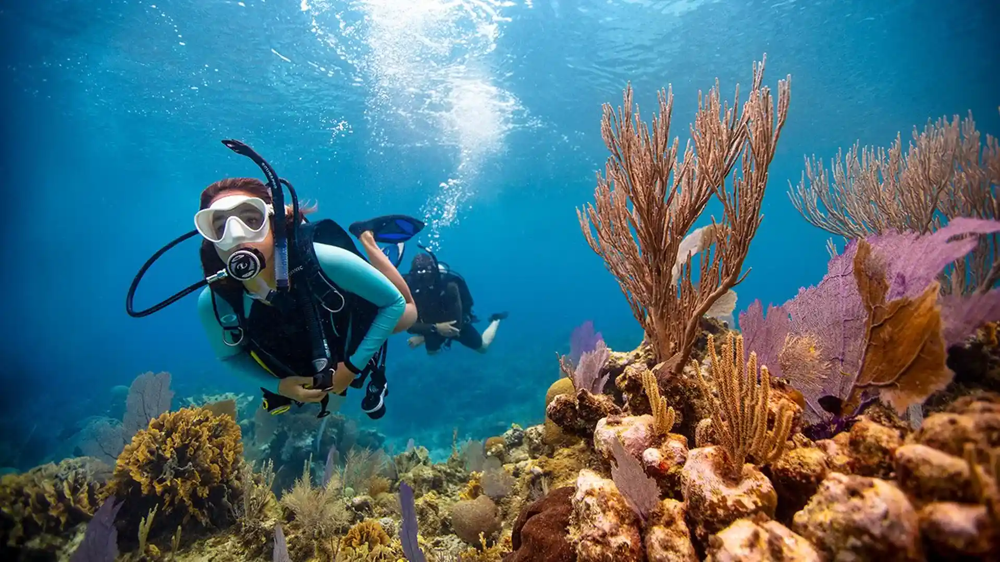
Explore shipwrecks and coral reefs off the coast.
📍 Jln Jerudong, Jerudong